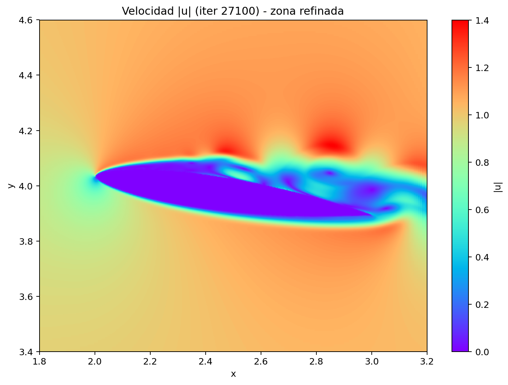
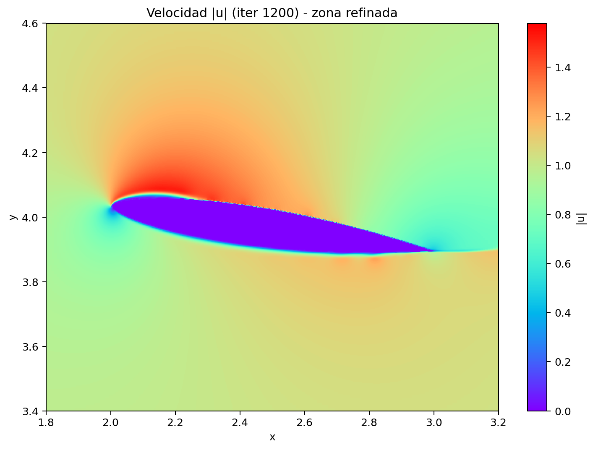
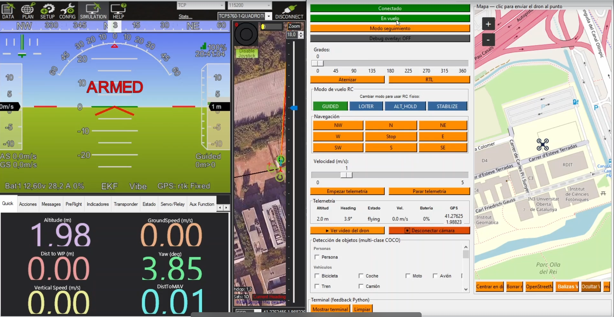
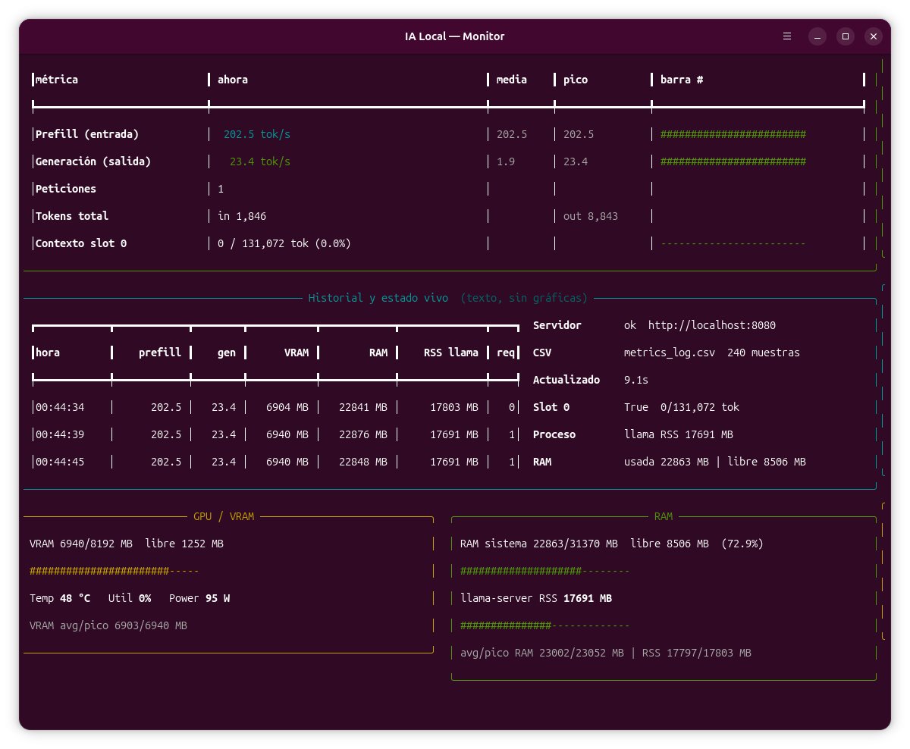

Capturas y vídeo reales del portfolio: CFD, sistema de drones e IA local.




assets/images/.
assets/videos/naca0012_dominio_completo.mp4.
La galería combina capturas estáticas con una pieza en movimiento del solver CFD.
Esta captura corresponde al orquestador híbrido local+nube y complementa el vídeo del solver:
assets/images/consola_ia.png
.animado
Fade-in desde abajo
.pulso
Escala pulsante
.girando
Rotación continua
<img src="..." class="animado"> —
<img src="..." class="pulso"> —
<img src="..." class="girando">